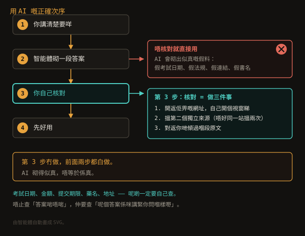

呢頁有咩
- AI 到底係咩？
- 第 1 步：問得準
- 第 2 步：核對
- 第 3 步：私隱
- 第 4 步：人嘅判斷
- 假消息同深度偽造
- 細路用 AI
- 有咩唔好做
- 出處
AI 到底係咩？
AI 係一個「砌嘢」嘅機器，唔係「識嘢」嘅機器。
佢讀過海量文字，記住咗啲模式。
你問一句，佢就按住嗰啲模式，一個字一個字砌出一段睇落好合理嘅說話。
小智識
呢個分別好重要。
搜索引擎係搵返真嘅出處畀你，連結撳得開就一定存在。
AI 係砌一段似真嘅說話——流暢、有道理、可以完全係錯。
所以 AI 答嘢唔可以當「搵到」，要當「有人建議咁做」。
用個類比：
- 搜索引擎係圖書館——書喺度，你攞去睇。
- AI 係一個讀過好多書嘅人，靠記憶即場寫信畀你。
佢寫得好好，但佢唔記得自己睇過乜，亦都唔會話「我唔肯定」。
問佢「呢個係咩年份」，佢會即刻答一個年份出嚟。
第 1 步：問得準
同一個問題，問得準就相差十倍。以下幾招係最實用：
講清楚三樣嘢
「幫我寫一封 email 俾老師，話下星期要請一日假，
原因係屋企有人入院，我要陪佢。
200 字以內，唔好太正式。」
收件人（邊個）、內容（講咩）、限制（幾長、咩 tone）—— 三樣講齊，
就唔使來回問。
話明佢可以點做
「唔好直接寫答案，講解點解咁做，等我自己諗。」
「先問我兩條問題，之後先出方案。」
「如果你唔肯定，就話唔肯定，唔好估。」
呢三句係同一個意思：你係幫手嘅，唔係代我做晒。
叫佢交出處
「每個事實後面加埋出處網址。」
「只用官方網站。」
叫佢俾出處，有一個好處：你順手就知要核對邊幾樣嘢。
冇出處嘅句子，通常就係最需要自己查嗰啲。
唔使識寫 prompt。
用返平時講嘢嘅方式就得——「幫我睇下呢個」「呢個點算」「呢個點解」。
上面嗰啲只係例子，唔係公式。
第 2 步：核對
呢步最容易被跳過，但係最重要嗰步。

中間嗰步（自己核對）係成件事嘅重點。
「核對」具體係做咩？
- 開返佢畀嘅網址，自己開個視窗睇。連結會唔會通？內容係咪咁？
- 搵第二個獨立來源。唔好同一個網站搵兩次當兩個來源。
- 對返你哋傾過嗰段原文——佢有冇誇大咁講？
咩嘢一定要自己查？
- 考試日期、報名期限（只信評核局 hkeaa.edu.hk）
- 金額、deadline、地址、時間
- 法規、政府表格要求（只信 gov.hk 或部門官網）
- 藥名、劑量、醫療建議——唔好靠 AI，問醫生
- 會唔會有人受影響嘅決定（見下面第 4 步）
出唔到處，就唔好當佢係真。
問「你講呢個嘅出處係邊？」——如果佢答唔出，或者俾一個你開唔到嘅連結，
咁就係砌出嚟嘅。呢個唔係罕見，係常見。
第 3 步：私隱
香港個人資料私隱專員公署（PCPD）有《10 TIPS for Users of AI Chatbots》，
以下係入面最貼身嗰幾條：
- 唔好貼自己嘅真名。用代號：「家長A」「學生B」「個案 #3」。
- 唔好貼其他人嘅個人資料——客戶、學生、同事嘅名、身份證號碼、電話、地址。
- 唔好貼機密文件——未公開嘅報告、內部會議文件、任何「仲未出街」嘅嘢。
- 只喺官方渠道裝 app，唔好裝不明第三方版本。
- 喺設定入面關咗「分享對話記錄」（如果個 app 有呢個選項）。
- 定期刪舊對話，唔用嘅帳號就登出。
PCPD 第 10 點特別講：
老師同家長應該俾學生指引，因為 AI chatbot 可能設最低年齡，
亦可能要求未成年用戶先得到家長同意。
佢哋可以叫 AI「用適合年齡嘅方式答」，減少細路接觸唔合宜內容嘅機會。
呢個屋企嘅智能體已經做咗一部分。
客戶、學生嘅可識別資料唔會寫入記憶、唔會寫入檔案、唔會傳去外部服務；
每次傾論會用代號。
詳細睇
工作指南。
第 4 步：人嘅判斷
AI 唔識分辨「重要」同「唔緊要」。以下幾樣，交返俾人：
| 邊度用 AI | 點解要你自己決定 |
|---|
| 交功課、做essay | 可以講解法、出題、check答案；唔可以代寫。咁樣根本學唔到嘢。 |
| 醫療、法律、財務 | 可以解釋文件、準備問題清單；唔可以俾意見。 |
| 情緒輔導 | 唔做。唔好用 AI 頂替真人支援。 |
| 人生決定 | 可以幫你列選項、列利弊；最後嗰句「你想點」留返俾你。 |
| 影響別人嘅事 | 客戶、學生、同事嘅下場，唔係你或者 AI 嘅事——你哋兩個都要睇清楚。 |
小智識
UNESCO 嘅十項核心原則，其中三項最好記：
唔傷害（唔好用 AI 嚟做一件你唔敢同人講嘅事）、
人手監督（AI 唔會攞走你嘅責任同問責）、
透明（應該講得清佢點解咁答）。
完整嘅十項喺
UNESCO 官方網頁。
假消息同深度偽造
呢個世界最需要警惕嘅唔係 AI 答錯問題，係AI 生成嘅內容睇落似新聞。
三個要留意嘅徵兆
- 太快。喺你未睇過原文之前，已經有人話「網上爆咗」。
- 太齊整。每段都三句、每句都同式，冇矛盾冇例外——真實世界唔係咁。
- 有圖冇出處。一張相好逼真，但搵唔返原始出處。
深度偽造（deepfake）
AI 可以造出一段扮成真人講嘢嘅影片或者聲音。
PCPD 2025 年出咗一套《Abuse of AI Deepfakes: Toolkit for Schools and Parents》，
專門畀學校同家長用。
呢個屋企要知嘅：
- 有人叫你即刻轉錢、睇條片就即刻做嘢 —— 停低，搵第二個人確認。
- 同學 send 咗一段「朋友」嘅影片，話係佢要借錢 —— 直接打個電話俾佢。
- 有人話係屋企人，但語氣唔似 —— 問一句只有你哋知嘅嘢。
AI 生成嘅圖片，點樣知？
- 手指、手、牙齒、字——經常唔對（但唔好只靠呢個，愈做愈好）
- 對唔上嘅光影、鏡頭反光、背景嘅直線
- 搵唔返原始出處、或者所有「出處」都係同一個網站
最穩陣嘅做法：如果你唔知呢張圖係邊度嚟，就唔好信，唔好轉發。
細路用 AI
呢一節係畀大女同細女嘅家長睇嘅，佢哋自己都應該睇一次。
- AI 可以幫温習，唔可以幫交功课。呢個係底線。
- 可以叫 AI 出題、改題、解釋步驟。但答案要自己諗。
- 細路唔應該自己開帳號。要大人一齊裝、一齊登記。
- 傾偈有底線。唔好將真名、住址、學校名、朋友嘅事講入去。
- AI 答錯唔會apologize。佢會好流暢咁繼續錯落去——所以要人睇。
最重要嗰句：
AI 唔會攞走你嘅責任。
如果一件事做錯咗要有人負責，嗰個人一定唔會係 AI。
有咩唔好做
| 唔好做 | 因為 |
|---|
| 直接貼學生／客戶嘅姓名身份證號碼 | 資料一旦離開你部機，你就唔知佢去咗邊 |
| 將 AI 嘅答案當考試日期、金額、法規 | 砌出嚟嘅似真嘢，睇落最似真 |
| 用 AI 代寫essay、報告、email 代發 | 交出去嘅係你個名，唔係 AI 個名 |
| 聽 AI 講唔好覆核就 send 個 email 出去 | 代發嘅後果係你嘅 |
| 同 AI 講真名去查嘢 | 代號一樣得，唔會冇咗效果 |
| 因為「AI 話咗」就唔再查 | AI 會話錯，而且講得好有自信 |
最實用嗰句：
當 AI 係一個好有耐性但冇學歷嘅實習生——
佢可以幫你做第一步，但最後嗰個簽名嘅係你。
出處
呢頁嘅原則唔係我作出嚟，係有出處㗎：
呢份網站嘅源碼喺
GitHub。
想改可以直接改。